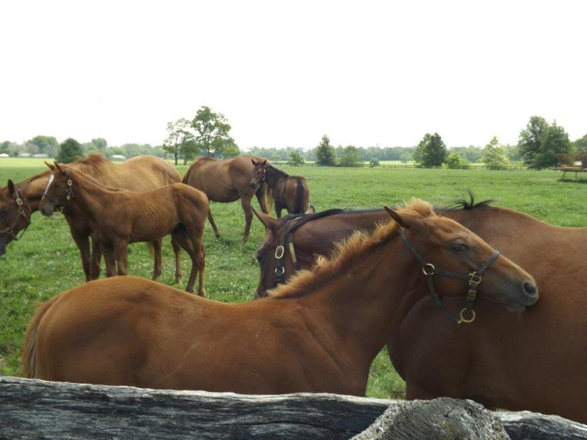
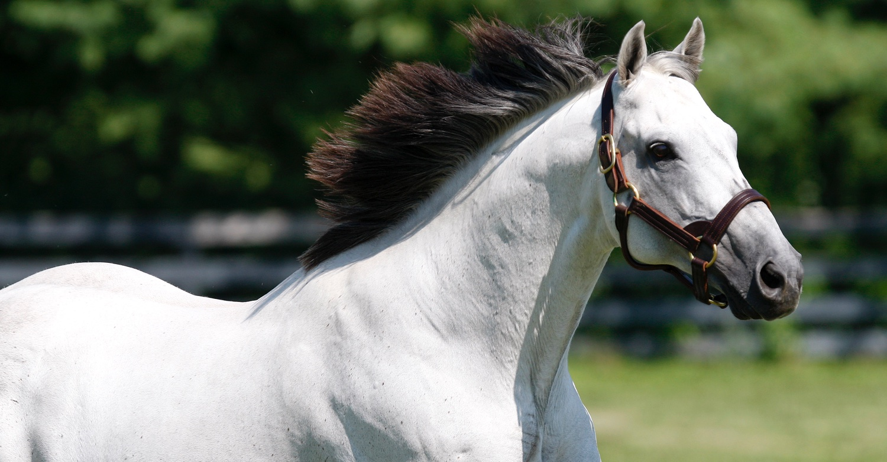

Our Guides
Meet our knowledgeable and experienced tour guides

David Leet
Senior Tour Guide
With over 20 years of experience in the horse industry, David brings extensive knowledge of thoroughbred racing and breeding. His engaging storytelling and deep understanding of Kentucky's horse country make his tours truly memorable.

Leslie Smith
Tour Guide
A native of Lexington, Leslie grew up around horses and has been involved in the industry her entire life. Her passion for sharing the history and beauty of Kentucky's horse farms shines through in every tour.

Michael Johnson
Tour Guide
Michael's background in equine science and his experience working on several prominent horse farms give him unique insights into the daily operations of Kentucky's thoroughbred industry.
Guide Qualifications
Expertise
- Extensive knowledge of thoroughbred racing
- Deep understanding of horse breeding
- Familiarity with Kentucky's horse industry
Experience
- Minimum 5 years in the horse industry
- Professional tour guiding experience
- First aid and safety certified
Training
- Regular industry updates
- Customer service excellence
- Safety and emergency procedures